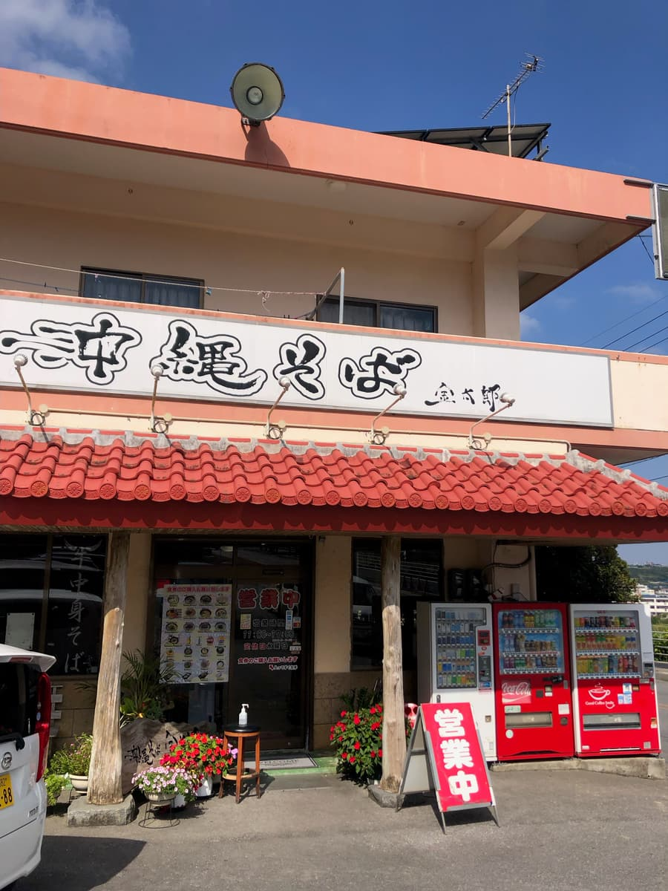
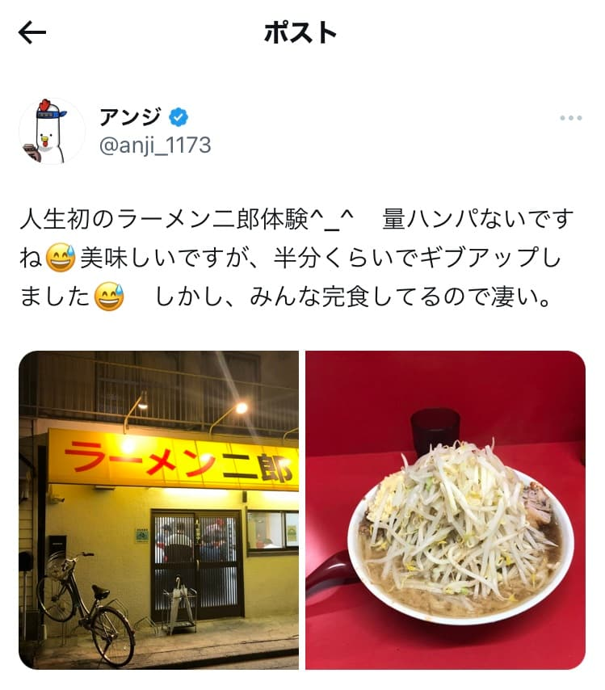
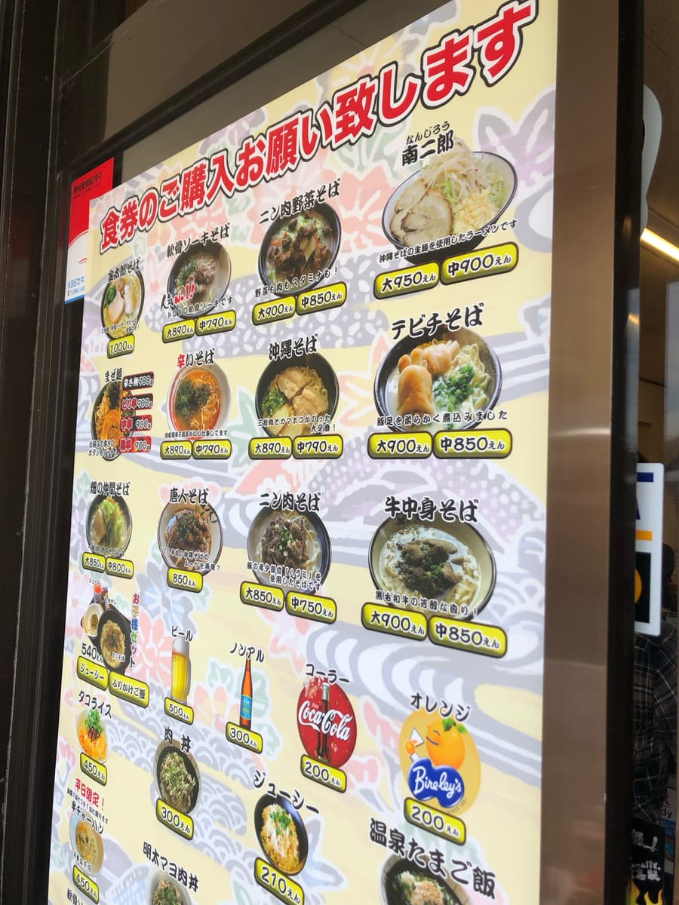
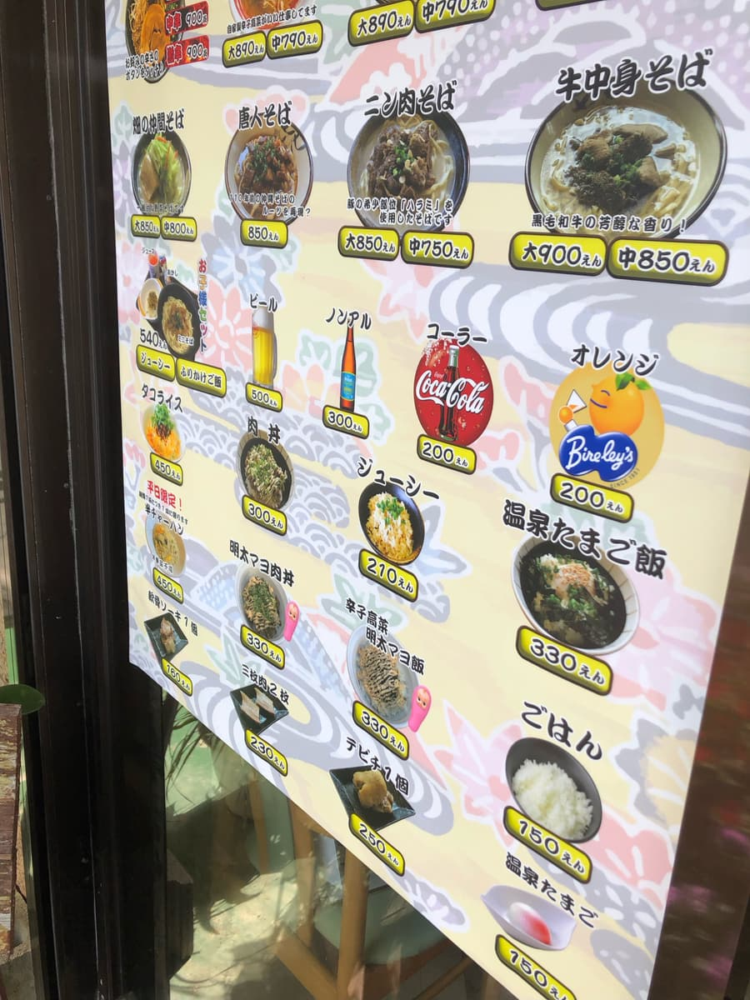
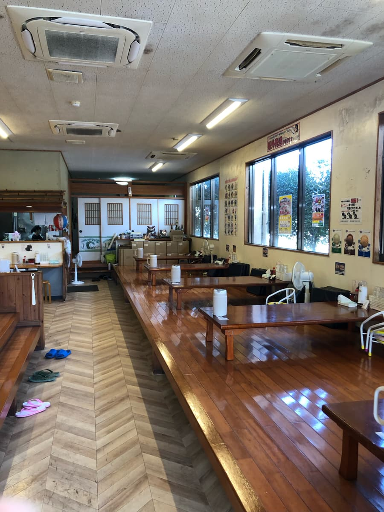
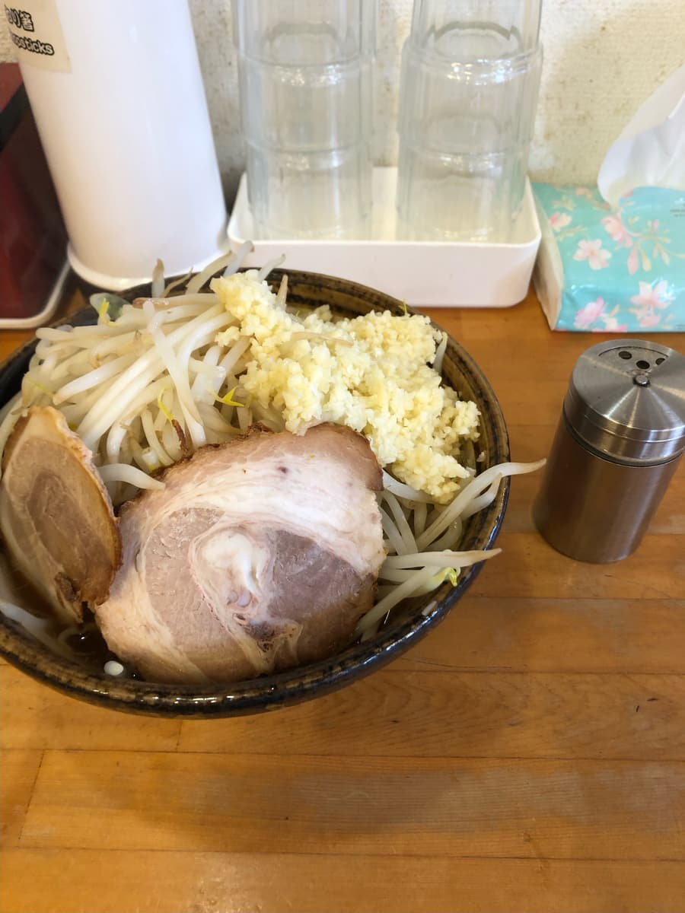
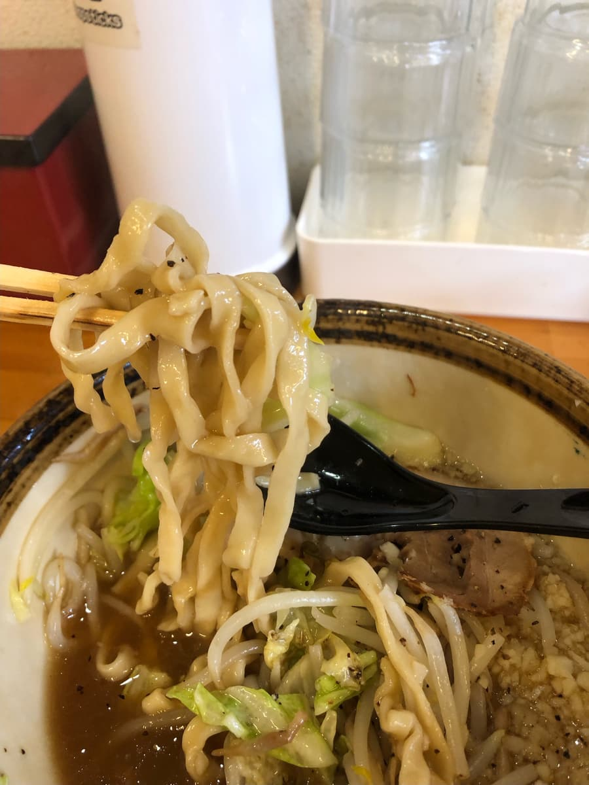

2024년 2월에 먹으러 갔습니다😄 이 가게는 신문에 소개된 것을 보고 알았는데, 무려 2023년 10월에 도쿄에서 처음 체험한 “라멘 지로”의 오키나와 소바 버전이 있다고 해서 궁금해서 먹으러 왔어요😄

참고로 아래 이미지는 도쿄에서 처음 “라멘 지로”를 먹었을 때의 X 포스트입니다(^0^;)
자세히 조사하지 않고 갔는데, 앞에 줄 서 있던 손님이 “소”로 주문하시는 걸 보고, “소”니까 말 그대로 적을 거라 생각해서 “소”를 시켰는데, 나와 보고 깜짝 놀랐어요 ㅋㅋ 먹어도 먹어도 양이 줄지 않고, 괴로워서 절반을 남기고 항복했습니다(^0^;)

이쪽 “오키나와 소바 긴타로”는 어떨까요? 오픈 수십 분 전에 왔는데, 개점 직전에는 많은 손님들이 있었어요. 주차장도 금세 만차 상태. 꽤 인기 있는 가게라고 생각했어요.


가게에 들어가니 식권 발매기가 있어서 “미나미지로”를 주문. 사이즈는 대와 중이 있는데, 만약을 위해 “중”을 주문(^0^;)
이 식권 발매기는 캐시리스에 대응하고 있어서 PayPay로 결제할 수 있었어요. 캐시리스는 좋네요👍
“미나미지로 중”을 주문하자 점원분이 “채소와 마늘의 양은 어떻게 하시겠어요?”라고 물어서 “많이 넣어 주세요”라고 주문했어요.
괜찮을까요? 도쿄 라멘 지로의 전철을 밟지 않을까요? 두근두근합니다(^0^;)


나왔습니다. 본가 “라멘 지로”처럼 면이 보이지 않네요(^0^;)
먼저 국물을 맛봅니다. 메뉴판에 “오키나와 소바 생면을 사용한 라멘입니다”라고 적혀 있듯이 간장 베이스 국물이라 이미 라멘이에요(^0^;)
하지만 보통으로 맛있어요. 다음으로 면을 맛보고 싶은데, 보이지 않아서 면에 도달할 수 없을 것 같으니, 채소, 차슈, 마늘을 조금씩 먹어 나갑니다(^0^;)
국물은 맛이 진하고 마늘도 들어 있어서 일단 펀치가 있어요.

면에 도달해서 맛봅니다. 쫄깃쫄깃한 생면이고 보통으로 맛있네요. 중사이즈에 채소와 마늘을 많이 넣었는데, 본가 “라멘 지로”의 소보다는 과연 양이 적긴 하지만, 그래도 푸짐해서 다른 가게의 대사이즈 이상은 될 것 같아요. 어떻게든 다 먹을 수는 있었어요😄
평가(9점/15점): 이제는 라멘이었어요😄 맛도 진하고 펀치가 있고 양도 많아서 든든하게 먹고 싶은 분께 추천합니다. 참고로 마늘의 양도 장난이 아니라서, 하루 종일 입에서 마늘 냄새가 나요 ㅋㅋ
면: ★★★☆☆（3）
수프: ★★★☆☆（3）
토핑: ★★★☆☆（3）